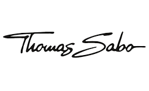
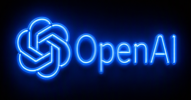
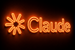

 Schmolke CarbonLiqesAlienworkPane VinoEasyFoilZenrootsPalazzo StuttgartSchmolke CarbonLiqesAlienworkPane VinoEasyFoilZenrootsPalazzo Stuttgart
Schmolke CarbonLiqesAlienworkPane VinoEasyFoilZenrootsPalazzo StuttgartSchmolke CarbonLiqesAlienworkPane VinoEasyFoilZenrootsPalazzo StuttgartSie sind nicht wegen Content hier.
Sondern wegen Conversions.
Ihr Werbebudget sollte als Kunden zurückkommen, die wieder kaufen — nicht als Impressions, mit denen sich nichts anfangen lässt. Produktion, Ad Creative und Media Buying liegen bei einem Team, damit zwischen Dreh und Media-Budget nichts verloren geht.
Sie sind nicht der Testfall.
Nike
Eine Kampagne, die aktuell für Branchenpreise in der engeren Auswahl steht. Der Maßstab für Ihr Creative ist damit ein globaler, kein lokaler.
FutureVision XPRIZE
Ein Film im Rennen um eine Top-10-Platzierung beim XPRIZE — Storytelling auf einem Niveau, an das sich die wenigsten Ad-Agenturen überhaupt heranwagen.
Eibl GmbH
Ad Creative und Paid Social für ImmoVersteigerung — wir unterstützen sie dabei, sowohl auf Social Media als auch im Performance Marketing zu wachsen.
Schmolke Carbon
Ein Rennrad-Hersteller aus Konstanz, bekannt für hochwertige Carbon-Rennkomponenten.
850.000 organische Views
Organische Reichweite für Radisson Blu, entstanden mit Agenturpartner Viral House — story-first Content statt klassischer Ad-Formate, der von ganz allein durchgestartet ist.
Wie aus einem Fremden Ihr Kunde wird.
Die meisten Ads schreien. Unsere hören erst zu. Cinematisches Ad Creative spricht mit Ihren Kunden wie ein guter Freund — kein Verkaufsgespräch, eine Geschichte. Wer sich gesehen statt verkauft fühlt, bleibt dran, statt weiterzuscrollen. Das ist der Unterschied zwischen einer Anzeige und einem Film: Die eine unterbricht, der andere lädt ein. Für B2C-Marken wird genau diese Einladung zu Nachfrage — und Nachfrage zu Umsatz.
Das Flow SystemEntdeckt werden mit Creative
Ihre künftigen Kunden begegnen Ihnen durch einen Film, für den man anhält — nicht durch die nächste Anzeige, an der sie vorbeiscrollen.
Vertrauen aufbauen mit Retargeting & Testimonials
Wer Sie einmal wahrgenommen hat, sieht Sie wieder — diesmal mit echten Kunden, die bestätigen, dass Sie liefern.
Ihre Zielgruppe konvertieren
Wenn sie kaufbereit sind, ist die Entscheidung längst gefallen. Der Abschluss ist nur noch Formsache.
Drei Dinge tragen dieses System. Fehlt eines davon, verliert der Funnel — egal, wie gut die Ads sind.
Marke & Rebranding
Eine Marke, die noch aussieht wie vor zehn Jahren, entwertet still und leise jeden Euro, den Sie in Werbung stecken. Erst kommen Auftritt und Sprache in die Gegenwart — damit alles Weitere auf festem Grund steht.
Durchgängige Konsistenz
Hervorragendes Ad Creative, das auf eine müde Website führt, verliert den Abschluss trotzdem. Social, Organic, Ad Creative, Website, Funnel — eine Typografie, ein Farbsystem, ein Gefühl, durchgängig.
Das Onboarding-System
Das Onboarding verlangt Ihnen vorab einiges ab — mit Absicht: Alles oben Genannte entsteht aus dem, was dabei zusammenkommt. Genau deshalb greifen die Teile ineinander, statt nur nebeneinanderzustehen.
Wo genau verlieren Sie Leads?
Nicht sicher, wo Sie anfangen sollen? Unser kostenloser 7-Minuten-Audit zeigt Ihnen genau, wo Potential besteht.
Kostenloser Audit →Drei Ad Creatives, neu geschnitten fürs Querformat.
Flow West Films ist ein cinematisches Kreativstudio, das Ad Creatives und Content für Mittelstandsmarken entwickelt, die skalieren wollen. Konzeption, Kreation, Performance Marketing und Analytics — alles inklusive.


Creative, das zu Ihrem Wachstumsmotor wird.
Wo wir skalierenPaid Social
Die meisten unserer Kunden starten auf Meta — wir skalieren aber dort, wo Ihre Zielgruppe wirklich ist: auch auf TikTok und LinkedIn.
Social Media AdsSearch & YouTube
Google und YouTube Ads laufen über Intent statt Interest — ein anderer Mechanismus als Meta. Eine starke Option, wenn Sie nicht stark auf Paid Social setzen wollen.
Search Ads

AI-Sichtbarkeit
Immer mehr Kaufentscheidungen beginnen in einer AI. Wir optimieren Ihre Marke so, dass sie in ChatGPT, Claude und Gemini gefunden wird — nicht nur bei Google.
AI-Sichtbarkeit AgenturOnboarding (2–3 Tage)
Ein schnelles, fokussiertes Setup, bei dem Strategie, Zugänge und Tracking abgestimmt werden — kein wochenlanger Anlauf.
Wöchentliche Performance-Calls
Ein fester wöchentlicher Austausch mit Ihrem persönlichen Performance Marketing Manager, um zu besprechen, was funktioniert, und Fragen in Echtzeit zu klären.
Monatliches Reporting
Ein vollständiger monatlicher Bericht zu Performance und Insights, damit Sie immer genau wissen, wohin Ihr Budget fließt und warum.
Genau darauf sind der Growth Retainer und Premium Partner ausgelegt.
Growth Retainer & Premium Partner ansehenWählen Sie Ihre Flughöhe.
Vier Angebote — vom einmaligen Hero-Asset bis zur maßgeschneiderten Partnerschaft unter Founder-Leitung. Die Preise besprechen wir im persönlichen Gespräch.
Launch Film
Ihre Geschichte, richtig erzählt.
- Strategie- + Positioning-Workshop (2 Sessions)
- Konzeptentwicklung + Skript
- Komplette cinematische Produktion (1–3 Drehtage)
- Hero-Edit + Cutdowns (60s, 30s)
- Behind-the-Scenes-Content-Paket
- Nutzungsrechte: Paid, Organic, Sales, intern
Creative Sprint
Nie wieder ohne Creative zum Testen.
- 2 Ad-Konzepte pro Monat — Hooks, Skripte + CTAs
- 5 fertige Video-Creatives pro Konzept (10 Videos/Monat)
- 20 Static-Creatives pro Monat (10 pro Konzept)
- Lieber UGC? Videos im UGC-Stil zum gleichen Volumen möglich
- Reiner Creative-Retainer — kombinierbar mit Ihrem eigenen Media Buying
Growth Retainer
Der komplette Motor, betreut.
- Alles aus dem Creative Sprint — monatliche Konzepte, Hooks, Skripte
- 2 Ad-Konzepte pro Monat mit 5 fertigen Creatives pro Konzept
- Komplettes Meta-Ads-Management — Strategie, Setup, Audiences, Scaling
- Strukturiertes Creative-Testing, direkt an die Produktion gekoppelt
- Performance-Reporting + monatliches Review und Roadmap
- Mindestlaufzeit 4–6 Monate — lang genug, damit Wirkung entsteht
Premium Partner
Was wirklich etwas bewegt.
- Konzeptkreation + Creative Direction über alle Kanäle
- Komplettes Performance Marketing — Creative und Paid Social als ein System
- Founder-led Strategie und Hands-on-Umsetzung
- Website-Builds, AI-Workflows und individuelle Systeme
- Maßgeschneiderter Umfang, abgestimmt auf die Zusammenarbeit — kein fixes Paket